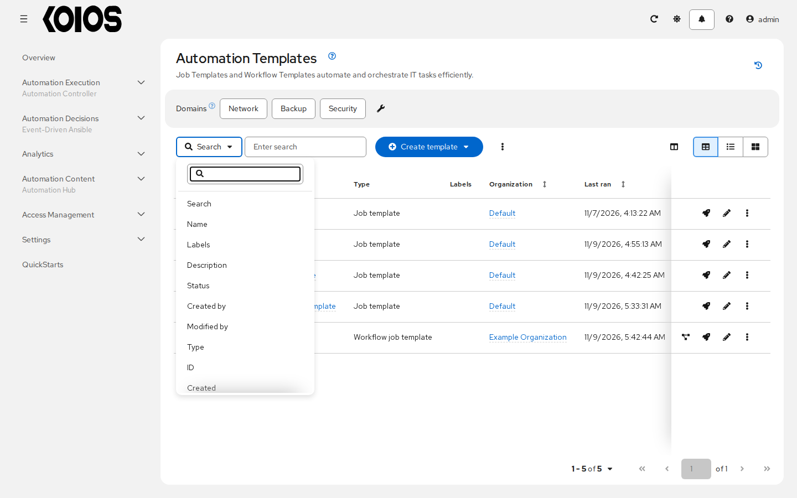
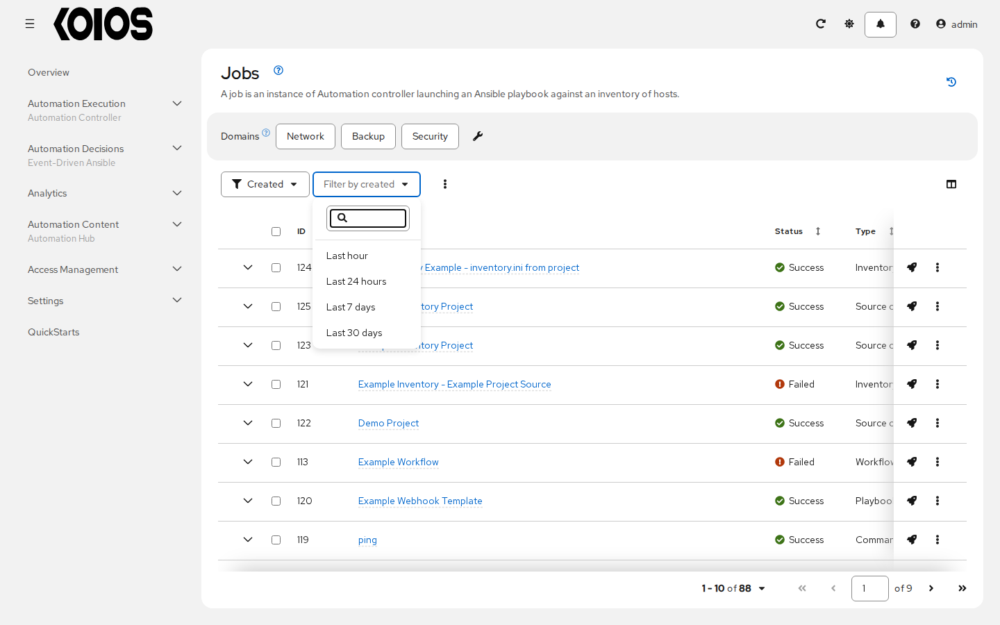
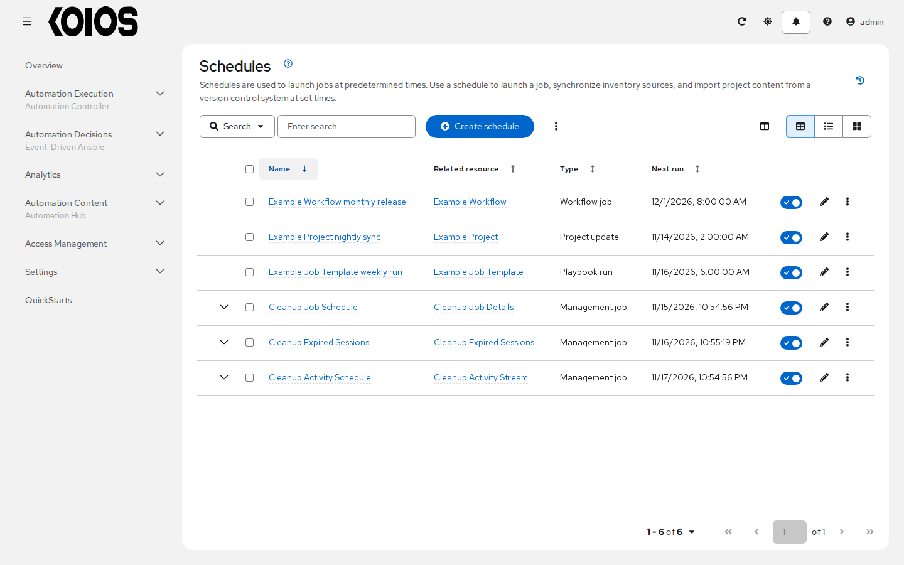

Use the filter toolbar above a resource list to narrow the results. The available fields depend on the resource and your permissions. Lists such as Automation Execution > Templates and Automation Execution > Jobs offer Search, Name, Labels and other resource fields.

Filtering by field
Select a field from the filter selector.
Enter text or choose values from the offered options. For a text field with an arrow button, press Enter or click the arrow to apply it. Search updates as you type; selection filters update when you choose values.
Add another filter to narrow the results further. Remove an applied filter chip to clear that criterion.
Use Search for a general text search. Use a specific field to constrain the match, such as Organization to select an organization or Labels to select label names. Some fields offer text matching, others offer a list of resources, choices or boolean values. The field selector determines how the value is interpreted; typing name:localhost or organization.name:Default does not select a field.
For details about label matching in Templates and Jobs, see Labels.
API queries
For queries beyond the filters offered by the UI, use controller API query parameters. For example:
/api/controller/v2/job_templates/?name__icontains=localhost
/api/controller/v2/job_templates/?organization__name=Default
/api/controller/v2/job_templates/?project__name=A%20Project
These are API queries, not expressions to paste into the UI search box. Use OPTIONS on the relevant endpoint to inspect its fields and related search fields. Available relationships depend on the resource. See Filtering for lookup operators, related fields and combining queries.
Date filtering
Where a date/time field is offered, select it in the toolbar and choose a relative range: Last hour, Last 24 hours, Last 7 days or Last 30 days. For example, choose Created on Automation Execution > Jobs to find recently created jobs. These ranges set a lower time boundary relative to the current time; they do not offer the old date/operator search controls.

For a fixed interval, use the API with explicit boundaries. For example, the following query selects jobs created during June 2026 in UTC:
/api/controller/v2/unified_jobs/?created__gte=2026-06-01T00:00:00Z&created__lt=2026-07-01T00:00:00Z
Specify a time zone in timestamp queries. A job with no finish time cannot match a bounded finish-time interval. Displayed timestamps may use your local time zone.
Sort
Click a sortable column header to change the sort order; click it again to reverse the order. The arrow shows the current direction. Available sort columns depend on the list.
